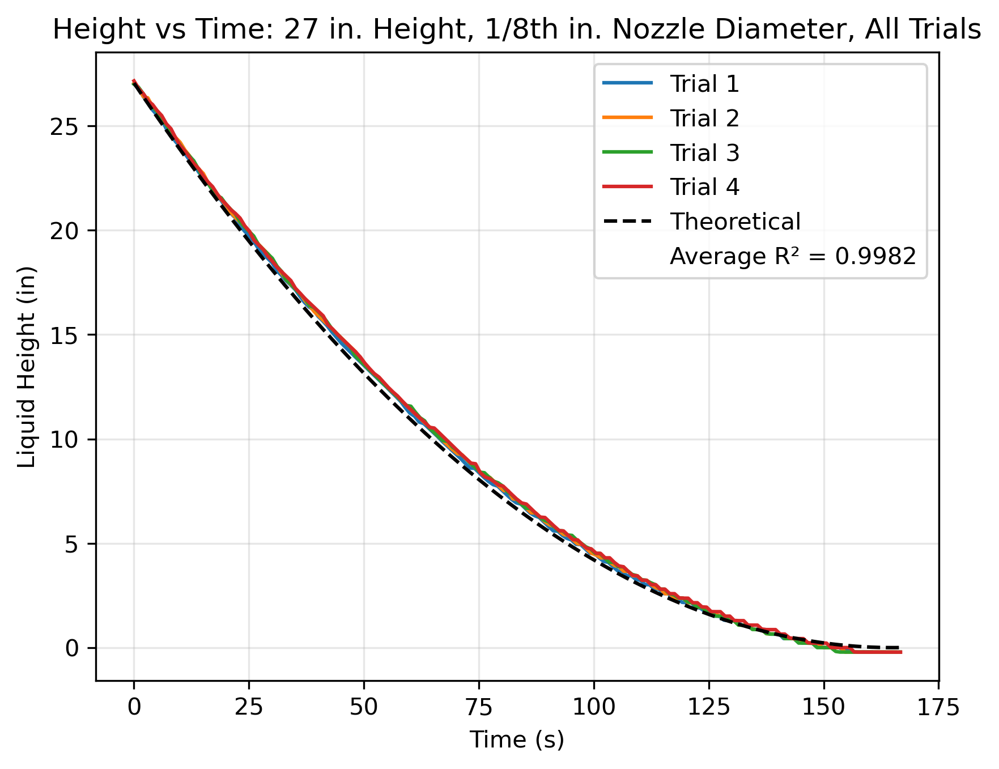
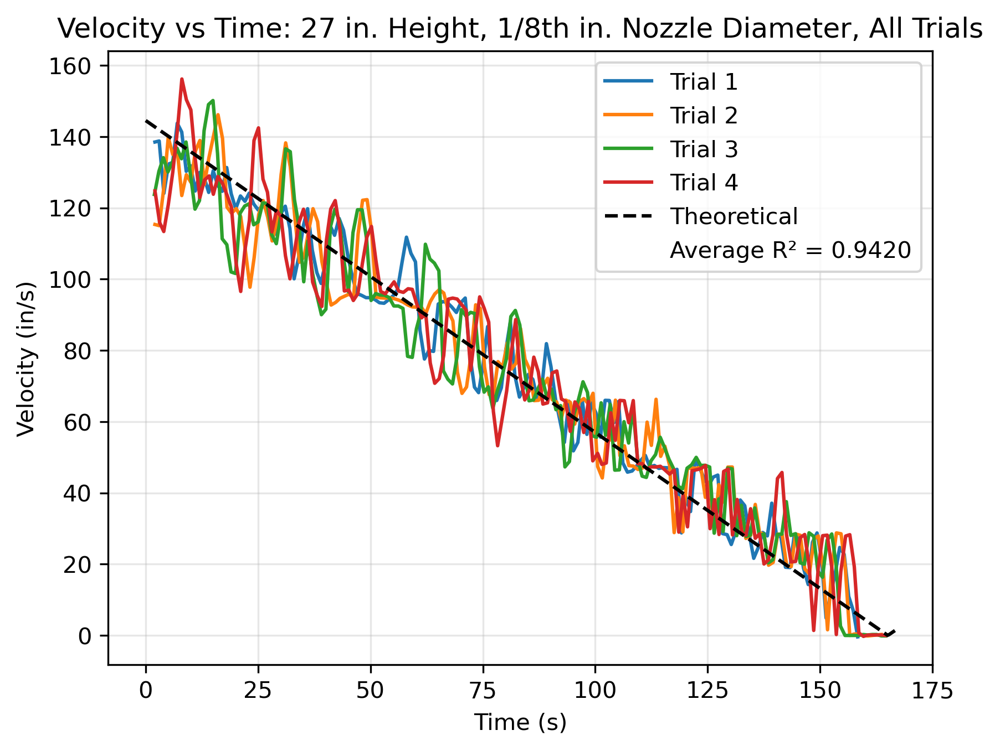

Data & Experiment
What we did and what we measured
Twenty-four draining runs, two orifices and three starting heights, compared run by run against the ideal Torricelli model.
01 The data
We drained the column from three starting heights (18, 22 and 27 in above the orifice centerline) through two orifices (1/8 in and 3/16 in), with four repeat trials of each combination. That gives six measurement suites and 24 runs. The 1/8 in runs were recorded on September 2, 2026 and the 3/16 in runs on September 16, 2026.
For every run, the Opto22 system logged the ultrasonic liquid-level reading (in) about once per second, together with pump power and other channels not used here. The raw files, the file-format notes and our analysis notebook are on the Attachments page.
The only "simulation" in this experiment is the ideal model from the Theory page: Torricelli's law (Eq. 2) combined with continuity (Eq. 3) gives a predicted h(t) (Eq. 7), v₂(t) and drain time (Eq. 8) for each suite. Every result below is a comparison of measurement against that model.
02 Apparatus and procedure
Apparatus
- Acrylic column, about 34 in tall with an inch scale, inner diameter 2.625 in.
- Interchangeable bottom flanges, each with a circular orifice (1/8 in or 3/16 in), swapped by unbolting the flange.
- Rule Slimline submersible pump in the bucket under the column, which refills the column through tubing to the top.
- ifm UGT507 ultrasonic level sensor at the top of the column (range 3.15–47.2 in; Table 1).
- Opto22 control system (SNAP PAC R-Series controller), which sets pump power and logs liquid level about every 1 s.
See the labeled photo in Figure 1.
Safety
- Safety glasses at all times; never leave the equipment running unattended; only pure water down the drains (Torricelli SOP).
- Water was kept away from the electronics box and computer, the flange bolts were fully tightened to prevent leaks, and spills were wiped up to avoid slips.
Procedure
- Checked that the bucket was full, then switched on the system (green switch on the electronics box).
- Filled the column by entering a pump power on the Opto22 interface until the level reached the target height: 18, 22 or 27 in above the orifice centerline.
- Set the pump to 0 %. The column drained freely through the orifice while the ultrasonic sensor logged h about every 1 s.
- Repeated each height 4 times for each of the 2 orifices (2 × 3 × 4 = 24 runs).
- Changed orifices by unbolting and swapping the bottom flange.
- Saved the data files to a flash drive after each trial.
Lab-day observations
We observed that the logged height lagged behind the actual water level. Because we stopped recording when the column appeared empty, the last few seconds of some runs were not captured. These truncated runs explain the drain times marked ᵃ in Table 5, and they feed into the discussion and recommended improvements.
03 Data processing
All processing was done in our Python notebook (pandas, NumPy, matplotlib), available on the Attachments page.
Run start
Each run starts (t = 0) when the height first drops 0.05 in below the median of its first 5 readings. This aligns the four trials of a suite on a common time axis.
Exit velocity: centered 5-point running derivative
Following our supervisor's recommendation, velocities come directly from the logged data, not from differentiating a fitted curve. At each data point, a straight line h = m·t + b is fitted by least squares to a centered 5-point window (the point plus 2 on each side, about 5 s of data), and the slope m is taken as dh/dt. The exit velocity then follows from continuity (Eq. 4):
The first and last 2 points of each run have no velocity value. We use a local fit rather than a simple point-to-point difference because A₁/A₂ = 441 (1/8 in) and 196 (3/16 in): a single small step in the height reading would otherwise produce a velocity spike several hundred times larger.
Agreement metric: R² against theory
Following our supervisor's second recommendation, we quantify agreement with the coefficient of determination R² rather than error bars on the continuous curves. For each trial i, R² is computed against the theoretical curve, and the four values are averaged:
Here y is h (height plots) or v₂ (velocity plots). The theoretical curve starts from the mean actual start height of the four trials, and only points with t ≤ Tend = 2(A₁/A₂)√h₀ / √(2g), while the theory is still draining, are included. Because it compares data with theory, R² = 1 means perfect agreement with Torricelli's law.
Drain time
The measured drain time is the time to empty to about 0 in, taken as the first reading at or below 0.1 in, because the sensor rarely reads exactly 0.
04 Results: measured vs. ideal model
Choose a suite to see its height and velocity graphs (Figure 3). Each plot overlays all four trials with the dashed ideal Torricelli curve and gives the average R² against theory, calculated per trial and averaged (Eq. 11). There are no error bars on these continuous time series; the R² value is the measure of agreement.




| Suite | R², height | R², velocity |
|---|---|---|
| 18 in, 1/8 in | 0.9989 | 0.9211 |
| 22 in, 1/8 in | 0.9984 | 0.9251 |
| 27 in, 1/8 in | 0.9982 | 0.9420 |
| 18 in, 3/16 in | 0.9548 | 0.7433 |
| 22 in, 3/16 in | 0.9486 | 0.7648 |
| 27 in, 3/16 in | 0.9444 | 0.7227 |
Reading the R² values
The 1/8 in orifice matches theory almost exactly in height (R² ≥ 0.998) and well in velocity (R² 0.92–0.94). The 3/16 in orifice departs more from the ideal model: R² falls to 0.94–0.95 for height and 0.72–0.76 for velocity. Velocity R² is always lower than height R² because differentiating the data amplifies small reading steps, while the height signal itself is smooth.
05 Drain time: calculated vs. measured
Table 5 and Figure 4 compare the measured drain times with the ideal model (Eq. 8). Together with the height graphs in Figure 3(a), which show measured and theoretical drainage over each whole run, it gives our calculated-versus-measured comparison. Measured values are the mean ± sample standard deviation of the four trials.
| Orifice | h₀ (in) | Theoretical tdrain (s) | Measured tdrain, mean ± SD (s) | % difference |
|---|---|---|---|---|
| 1/8 in | 18 | 134.7 | 118.4 ± 1.3a | −12.1 % |
| 1/8 in | 22 | 149.2 | 134.2 ± 0.5 | −10.1 % |
| 1/8 in | 27 | 165.4 | 149.8 ± 1.3 | −9.4 % |
| 3/16 in | 18 | 59.3 | 57.0 ± 3.0a | −3.9 % |
| 3/16 in | 22 | 64.3 | 61.2 ± 2.5 | −4.8 % |
| 3/16 in | 27 | 73.6 | 69.9 ± 3.7a | −5.0 % |
Definitions. Measured drain time: time from the run start (first reading 0.05 in below the median of the first 5 readings) to the first reading at or below 0.1 in. Theoretical drain time: Eq. 8 with Cd = 1, hf = 0 and h₀ equal to the mean actual start height of the four trials. % difference = (mean − theoretical) / theoretical.
a Includes trials in which logging stopped before the column fully drained (we stopped recording when the column appeared empty, but the logger lagged behind real time), or the reading levelled off above the threshold. The time of the last recorded point was used, so the true mean drain time is slightly longer.
Why the measured drain times are shorter than theoretical
The theoretical times are calculated to a liquid height of exactly 0 in. The measured times stop at the first reading at or below 0.1 in, because the ultrasonic sensor rarely reads exactly 0 (the 1/8 in runs settle at about −0.2 in). In the ideal model the last 0.1 in drains very slowly and takes about 6–7.5 % of the total drain time at these starting heights (√(0.1 in)/√h₀ for h₀ = 18–27 in, from Eq. 8). So much of the gap comes from this difference in end points, not from the flow itself. Means marked a also include runs that stopped logging before the column emptied, which shortens those times further.
06 Discussion of results
1/8 in orifice: close to ideal
For all three starting heights, the measured h(t) lies almost on top of the ideal parabola (Eq. 7), and the four trials are nearly indistinguishable. The column empties in roughly 120–150 s depending on height. Near the very end, the readings reach zero a few seconds before the theoretical curve and then settle at about −0.2 in, which suggests a small zero offset in the sensor. The same offset means the 0.1 in reading is reached slightly before the true level gets there, which adds to the drain-time gap in Table 5.
3/16 in orifice: slower than ideal
The measured h(t) sits above the theoretical curve for most of each run (Figure 3a with 3/16 in selected), so this orifice drains more slowly than the ideal model predicts. This is the behavior expected when losses are present: friction and jet contraction at the orifice (the Cd < 1 concept on the Theory page) reduce the flow below √(2gh)·A₂. The 3/16 in trials also started farther from the nominal heights (about 17.1–18.1 in for the 18 in suite and 25.4–27.2 in for the 27 in suite) than the 1/8 in trials, which started close to nominal. The theory curve starts from the mean of the four start heights, so this spread also lowers R².
Exit velocity at the start and near the end of each run
The ideal start velocities are 117.9, 130.3 and 144.4 in/s for h₀ = 18, 22 and 27 in (Table 3). Reading the velocity graphs (Figure 3b):
- 1/8 in, start: the first velocity values (about 2 s into the run, since the 5-point window has no value for the first 2 points) scatter around, and mostly slightly below, the theoretical line. For the 27 in suite they fall between roughly 115 and 140 in/s against a theoretical 144 in/s.
- 1/8 in, near the end: the measured velocity follows the theoretical line down to about 20–30 in/s (the ideal value at h = 1 in is 27.8 in/s) and then drops to zero as the column empties.
- 3/16 in, start: measured v₂ is clearly below theory. For the 18 in suite the first values are about 80–105 in/s against a theoretical value of about 113 in/s at that time.
- 3/16 in, near the end: measured v₂ is above the theoretical line, and the traces stop at about 20 in/s instead of reaching zero because the ends of these runs were not captured.
The 3/16 in pattern follows from the slower drainage. Theory and measurement are compared at equal times, not equal heights. Because the real column drains more slowly, at late times it still holds more water than the model predicts, so its jet is faster than the model's jet, which is approaching zero. Early losses and later "excess" velocity are two views of the same reduced flow rate.
Velocity noise and the running-average window
The 1/8 in velocity traces are much noisier than the 3/16 in traces even though the height data look smoother. The height readings change in small steps, and at 1 s sampling each step produces a jump in the local slope. Continuity multiplies that slope by A₁/A₂ = 441 for the 1/8 in orifice but only 196 for the 3/16 in orifice, so the same reading step becomes a velocity jump more than twice as large. The 5-point running derivative smooths this considerably; without it the velocity would be dominated by spikes.
Comparison with the pre-lab predictions and the literature
In the pre-lab we predicted that exit velocity at a given height would not depend on orifice size, and that real losses would make measured velocities lower than ideal. The 1/8 in orifice behaved almost ideally, while the 3/16 in orifice showed the expected losses, so the two orifices did not behave identically. The shape of every measured h(t) curve is the parabola predicted by the textbook falling-head analysis (de Nevers and Silcox 2021), and the ideal velocity relation matches the open-access derivation by Halpern (2024), which, like our model, omits losses. The Conclusions compare these results with a published Torricelli experiment and with our pre-lab answers in more detail.